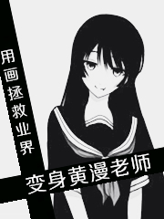

变身黄漫老师
白白白

简介
【欢乐书客暑期主题征文】 这个世界到底存不存在着长的特别漂亮，同时性别为女，而且画-画的特别好的美少女黄漫作家呢？
打开原始网站
1.‘人生剧变，我从今开始画黄漫’
2.‘我画的是黄漫，是工口漫’
3.‘不会画？那就照着我画’
4.‘男女？我皆杀之’
5.‘我的漫画，魔性之本！’
6.‘黄漫老师，工口界潜规则’
7.‘我啊，送你进本！’
8.‘你这下流的家伙正在对我的画稿做什么？’
第9章：‘对不起，我是黄游制作者’
第10章：‘首次登刊’
第11章：‘黄漫老师与黄油老师的取材路’
第13章：‘让世界感受痛楚’
第14章：‘加强版夜勤病栋’
报：感冒转发烧
第15章：‘师徒’
第16章：‘从不拖稿’
第17章：‘电车之女’
第18章：‘母…朋友收集APP’
第19章：‘这个黄油女主有点像…’
第20章：‘我，黄游女主？’
第21章：‘先下手为强’
第22章：‘玩自己’
第24章：‘新助手报告’
咕咕咕…
第25章：‘八月与九月之间的空档期’
第26章：‘丝袜年代？裤袜年代？’
第27章：九月不但开学，还开战
第28章：‘再见触手魔女’
第29章：‘上…上学？’
第31章：“愉悦至上”
第32章：‘此本只应天上有！’
第33章：‘我，友人，恶堕ing’
第34章：‘女孩子喜欢的坏坏的漫画’
第35章：‘请让我看看你的身体’
第36章：‘美少女异闻录？’
第37章：‘你找错对手了！’
第38章：‘特殊人体绘画专业’
第39章：‘双子玩弄’
第40章：‘刺猬’
第42章：‘我自首，是因为一本工口杂志’
第43章：‘织田樱老师的正确’
明天回复更新
第45章：‘表面宿敌’
第46章：‘花京院瑠美的替身’
第47章：‘学我者生，似我者死’
第49章：‘小哥，你想穿女装了’
第50章：‘我，我是谷口爱莉，17岁，学生desu’
第51章：‘她真可爱’
第52章：‘他真迷人’
第53章：‘饥饿’
第54章：‘不配去想’
第55章：‘织田樱难以启齿的秘密’
第56章：‘樱小姐超有胆量’
第57章：‘偶遇，工口界不世出的鬼才？’
第58章：‘访谈一二事’
第59章：你画的真是太好，太刺激了！
第60章：‘学生会长是个好职位’
第61章：‘世界真可怕，我要回家’
第62章：‘榨 汁技术’
第63章：‘织田老师的幼儿园补习班’
皮完了，回家~明天更新
第64章：‘梦开始的作品’
第65章：‘你会音乐，能下棋，学富五车，偏偏要做工口漫作家’
第66章：‘求求你别秀了，给我们一条活路吧’
第67章：矮还能不能活着了？
第68章：‘插什么画？型什么…噗！月？’
第69章：‘不喜欢？这是你十年之后的画风’
第70章：‘原稿收集者’
第71章：恐怖！工口成人作家的发布会？
第72章：美少女漫画家当场开骂——
第74章：历史的破坏者，重新修订者
第75章：‘二五仔？’
第76章：‘爱笑猫’
第77章：我为鸽狂
第78章：花落谁家？
第79章：三年赚，十不亏
第80章：选择
第81章：勤奋的织田，努力的富坚
第82章：织田樱的脑内世界
第83章：亚楠
第84章：终极大招，开宗立派流？